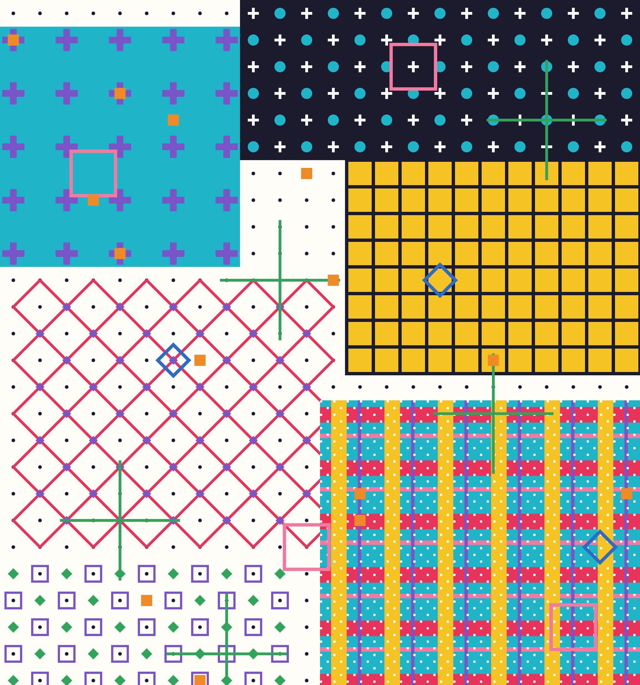
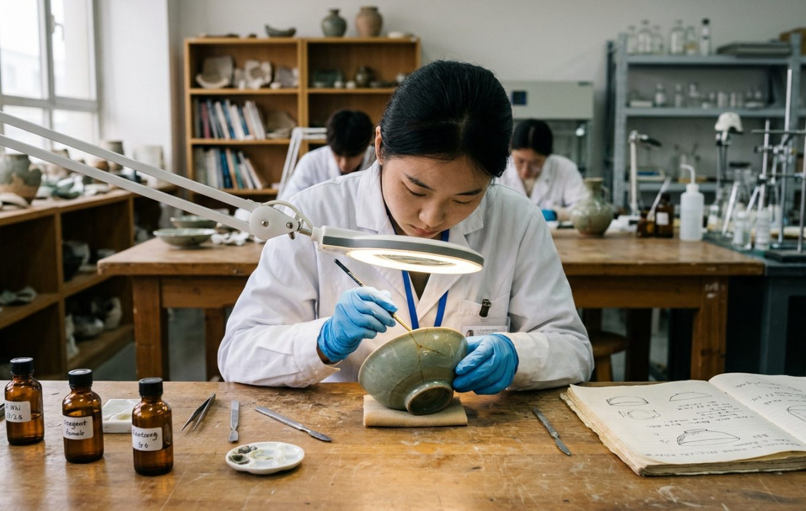
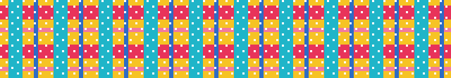
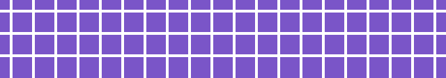
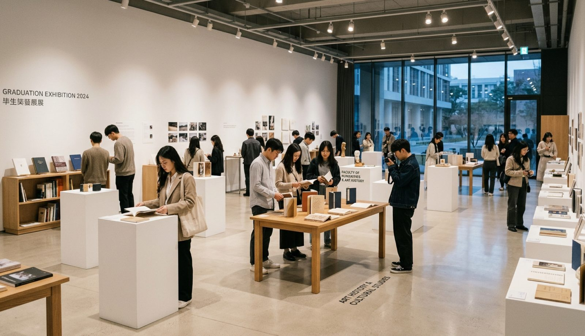

在以造型与设计为主体的大学中，人文艺术学院承担全校公共艺术史论教学。7 个本科专业与 1 个公共艺术史论教研室，横跨艺术学、管理学、文学三个门类。

除文物保护与修复外，学院其余本科专业均面向普通高考考生，在普通类常规批录取，无需参加艺考。

依托省级实验教学示范中心的陶瓷修复教学实验室与陶瓷修复补烧实验室，学生完成从病害记录、清洗加固到补配作色的完整流程，并编制修复档案。
每学期一期 · 每期 4 位 · 至少 1 位青年教师
教授 · 艺术设计学
研究方向：民艺学、传统工艺造物的现当代转换
近期待补充（新著、展览、获奖或主持项目）
讲师 · 文物保护与修复
研究方向：陶瓷文物保护与修复、修复档案编制

职称 · 所属专业
研究方向：待补充

教师姓名
研究方向民艺学、传统工艺造物的现当代转换
研究方向陶瓷文物保护与修复、修复档案编制
研究方向待补充
56位教师
